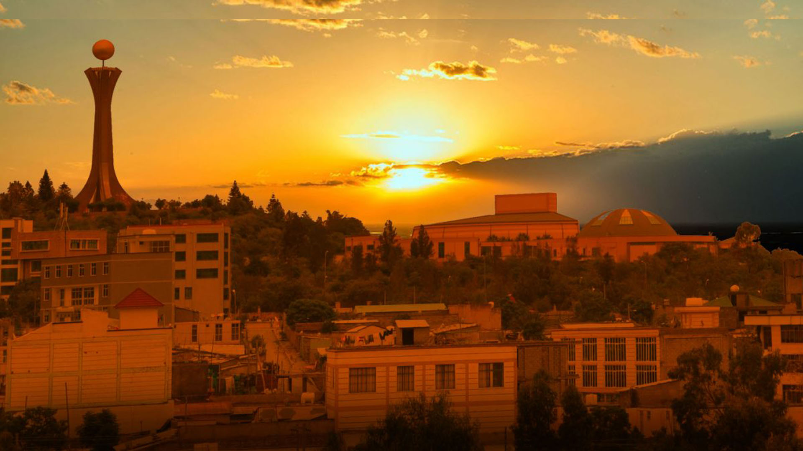

Mekelle is the capital of Ethiopia’s Tigray region, known for its role as a cultural, political, and economic center.
The city blends modern life with history, featuring lively markets, universities, and landmarks such as Emperor Yohannes IV’s palace.
Surrounded by rugged highlands, Mekelle also serves as a gateway to northern Ethiopia’s historic and natural attractions.
Must-See Spots
Martyrs' Memorial Monument Mek'ele
Emperor Yohannes IV Palace
Mek'ele Museum
Church of St. Mary of Zion
Hawelti
Visitor Tips
Best Time to Visit: August to January to experience some of Ethiopia's holidays and Ashenda, a holiday in the Tigray region that celebrates girlhood.
Local Cuisine: Try traditional dishes like injera with various stews (wat) and Mek'ele's national food, Tihlo. Tihlo is edible dough-like food shaped into balls and is eaten with Selsi, a spicy meat stew.
Transportation: Use local minibuses or taxis for getting around the city. I highly recommend getting a travel guide.
Cultural Etiquette: Dress modestly and ask permission before photographing people.
Safety: Stay informed about local conditions and follow travel advisories.

Mek'ele city during the sunset
Testimonial
"Visiting Mek'ele was a beautiful experience that has left me speechless. I was surrounded by such beautiful people, dances, and traditions."